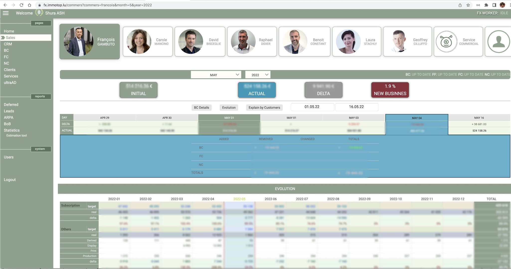
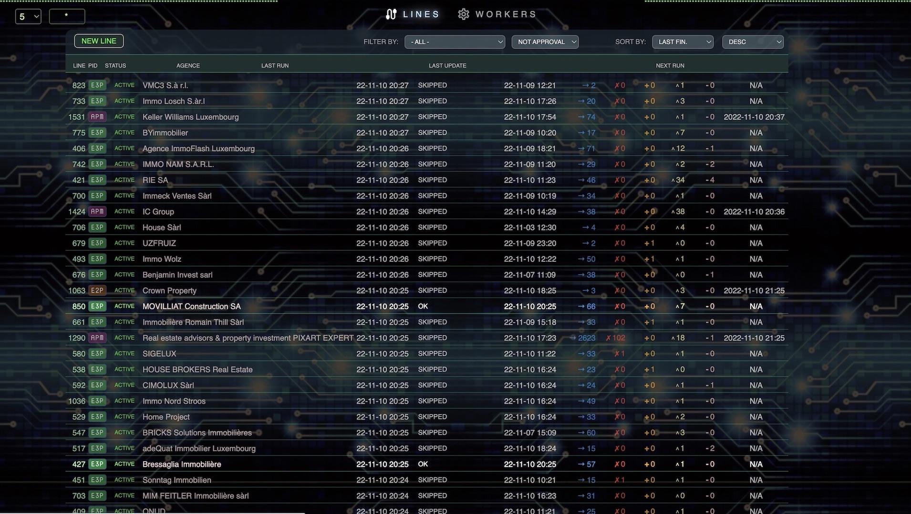
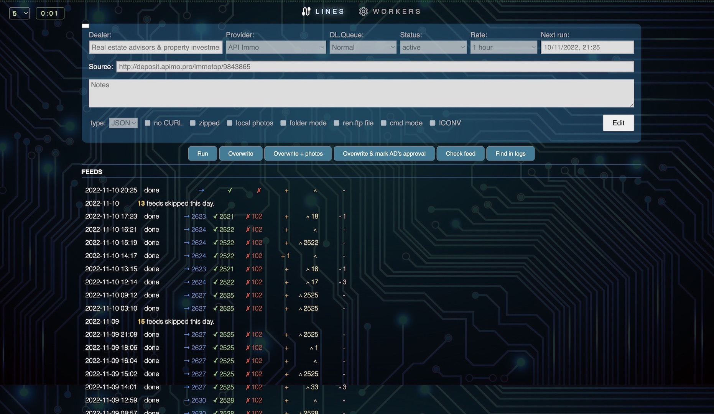
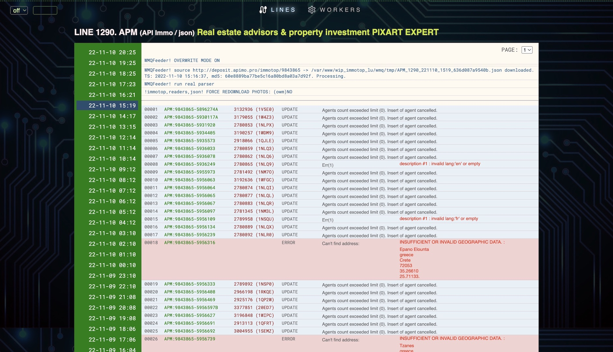
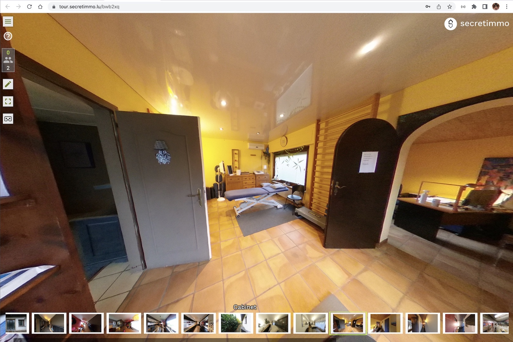
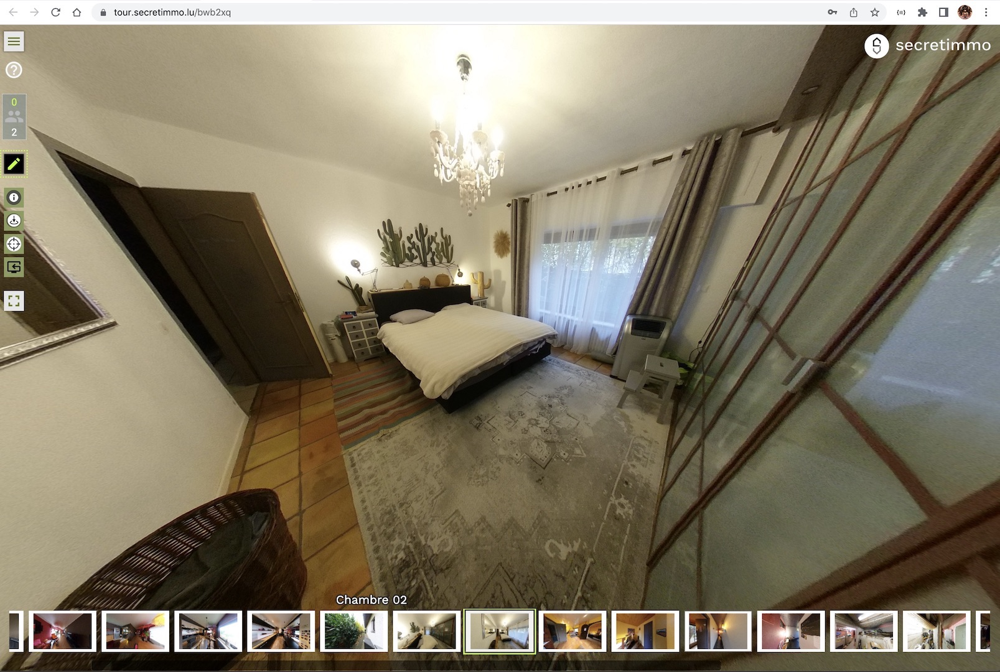
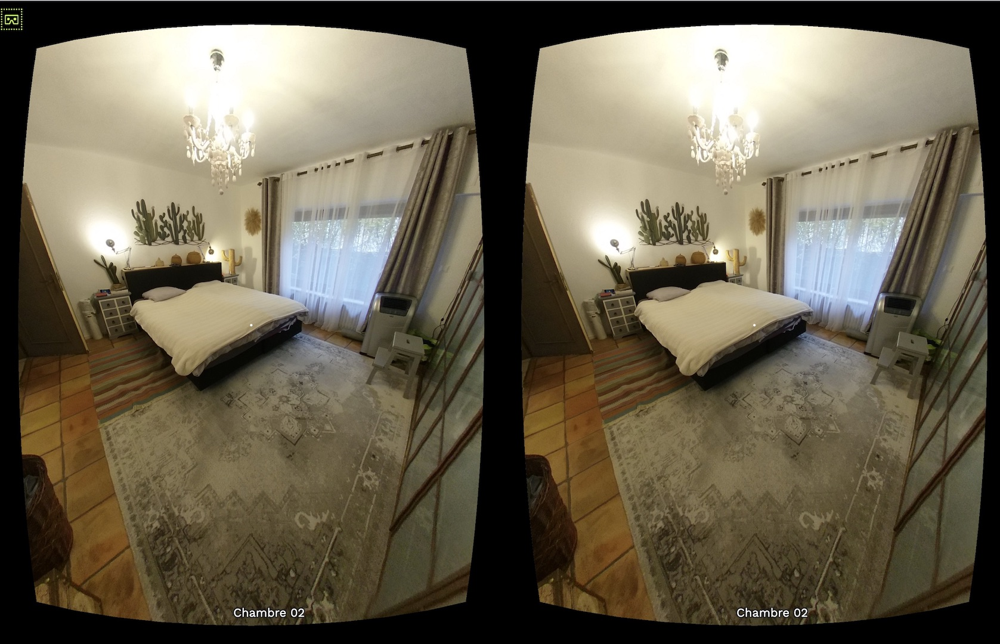

Incarnation
Incarnation
Incarnation
Incarnation
This page is a combination of
Born in Belarus in 1971, I have lived most of my life in Estonia before eventually moving to Luxembourg in 2007. For more than 30 years my main occupation and passion has been code selection, I like calling myself a codeweaving caterpillar.
Please contact me on this email shuraash@gmail.com
My main skill is finding solutions.
With my extensive experience and creative approach, I can propose a functional and elegant solution for almost any task for back end, front end, database or all of the above. Having started my career from PL/M, BASIC and Pascal, switching then to Delphi and after to Web stack, I have proven to easily learn new languages and technologies.
I have strong experience in JavaScript, PHP, SQL, CSS and many more. I am good at data modelling and data analysis.
Big data from different sources, with lots of parameters to analyse. Built from scratch.
Implemented on Node.js with the help of postman.com
(API doc).
For the last 12 years I had been working at IMMOTOP.LU which grew very successful also due to my input. Later it got acquired by a large corporation which is now managing the front end and the web interface. However, the back end is still 60-80% based on my code, as well as the clients' area for listings management.
I have also developed from scratch the 2 essential tools for Immotop's management:




Both tools were implemented on standard Web stack: MySQL/PHP/JS + Redis, without using any wide-spread and unnecessarily huge frameworks, so the resulting code worked in a very fast and reliable way.
The first versions of devices apps for IOS and Android for Immotop.lu were also coded by me using TRIGGER.IO (unfortunately discontinued after I left the company).
For Secretimmo I also made a tool for virtual visits (view and editing) + video group chat + remote control
(an agent could take control of moving through panorama views).
There was an option to record a visit with a voice guide + background music which could also be played after.
It was made using Panolens.js for panoramas
and Web-RTC + simple-peer".
Tiny Signalling server on WebSockets / Node.js.
Access token is available upon request tour.secretimmo.lu



Another interesting project I made in the beginning of 2000s was TRIP, a solution for small logistics companies owning several trucks. It was developed to calculate truck trip expenses / income / fuel expenditure / drivers' salaries etc. It was mostly based on the database, but also allowed data import from special controllers installed on the trucks with GPS/GSM modules (satellite controlled trucks). Deplhi + Yaffil (Firebird/Interbase).
From 1990 till mid 2000s I have made a number of apps for small companies: invoicing / stock management / payments etc, starting with MS DOS / Paradox (which was better than MS Access and others in my opinion), and after switching to Windows / Delphi. I have also made some smaller applications: a MIDI clock emulator, a voltmeter device testing/calibrating utility. Option Matrix verification (also in the device), an oil products weight calculator for railroad tankers - it took measurements from oil liquid level (in meters) in the tanker and then using a database of tanker types, density tables and air temperatures calculated the final weight of oil product in the tanker. There were so many small projects that I can't remember all of them now.
At the very start of my professional career in the ex-USSR I was writing software for automation and control of equipment in a huge military radio center. Following a certain schedule, this software was sending commands (using a kind of serial ports) to a special controller for switching parameters on radio transmitters / receivers. The first test version was made on Basic (with line numbers), then on Turbo Basic and then on Turbo Pascal.
I have also spent a big amount of time on sound/music software, starting from mod tracker on Commodore Amigo. I have a strong background in audio editing / mixing and some significant skills in graphic / video editing: Photoshop, OBS, After Effects etc.